Keystone · Domestic Platforms
One access model, every platform.
Keystone's domestic education websites had several moments where users hit a login wall — saving favourites, writing reviews, requesting information, taking education tests, or booking programmes. My challenge was to turn those separate moments into one consistent member access pattern that worked across sites, markets, devices, and user intentions.

Login wasn't a single page. It was a repeated interruption — across every platform.
Login was not one screen. It appeared in different moments across the product — sometimes as a direct action, sometimes as a requirement before completing a task. That made the experience harder to explain, harder to maintain, and easier for users to misunderstand.
I mapped the entry points first to understand where login interrupted the journey, what the user was trying to do, and what the system needed to remember after authentication.
Before designing a modal, I mapped every interruption.
Mapping every entry point helped reveal that login was not a single journey, but a recurring interruption across several user goals. Visuals show studentum.se as the primary design context.
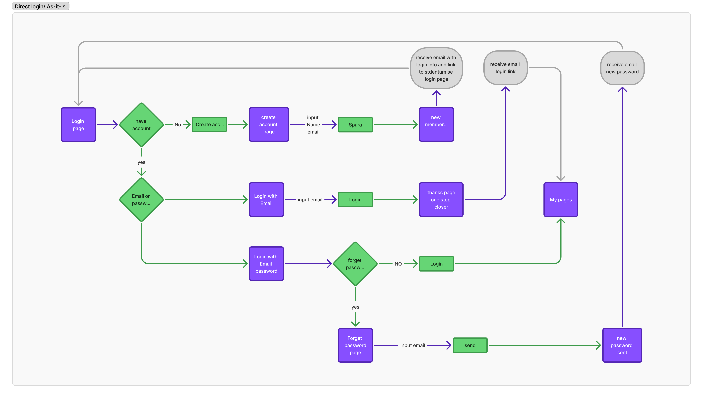
Indirect login moments were more sensitive because users were already mid-task and expected to continue without losing context. Designing a consistent resolution path — across all seven entry points — was the core challenge.
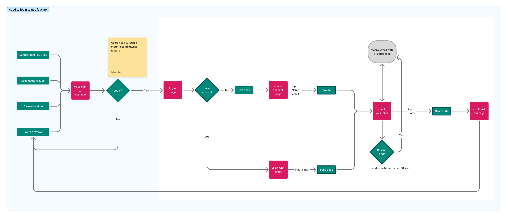
A fragmented experience, resolved into one verified flow.
I recommended a code-based access flow because it reduced dependency on forgotten passwords, worked for both new and returning users, and could be reused across entry points without asking users to choose the right login path first.
The goal was not only to simplify the login screen, but to create one reliable access model that could support direct login, gated actions, account creation, verification, and return-to-task behaviour.
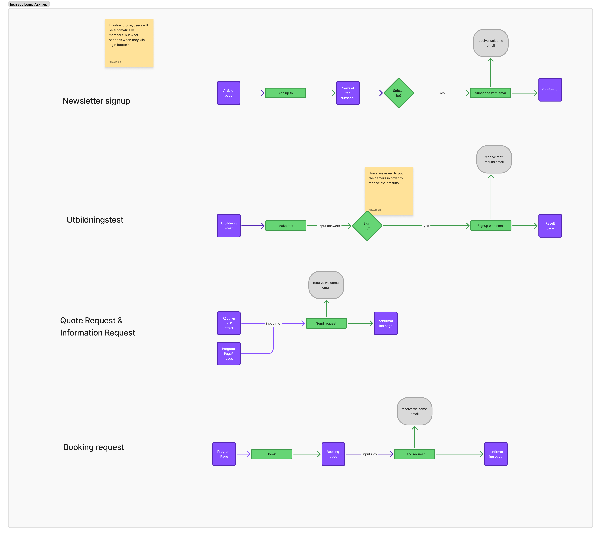
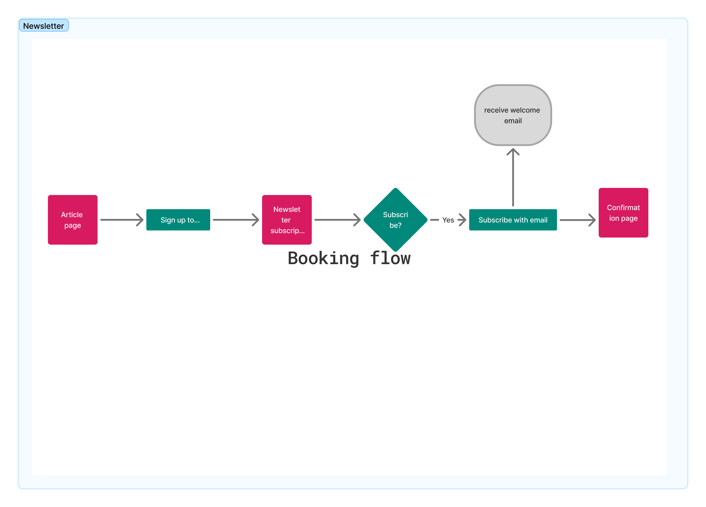
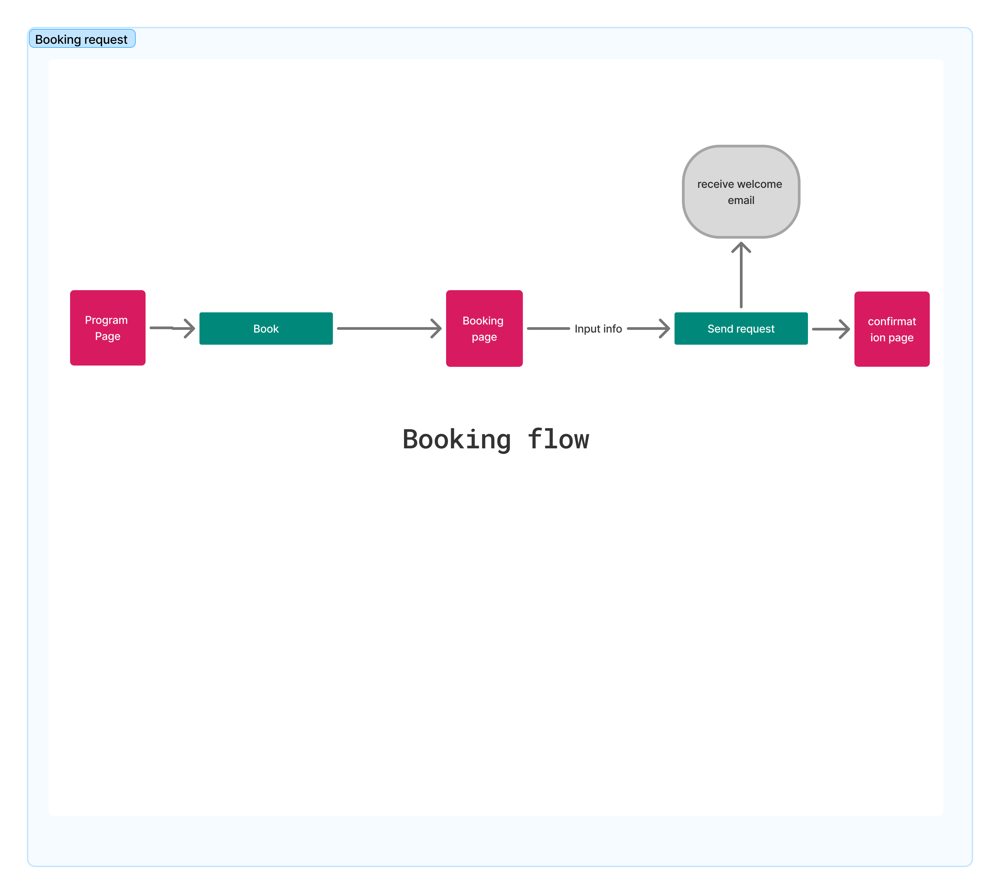
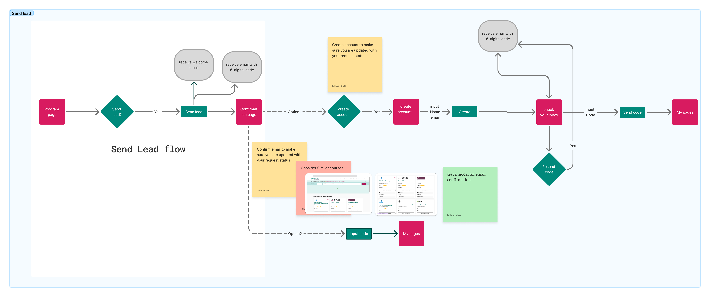
Every state, designed.
Each modal state was designed as part of one system: start, create account, verify code, success, and return to the original task.
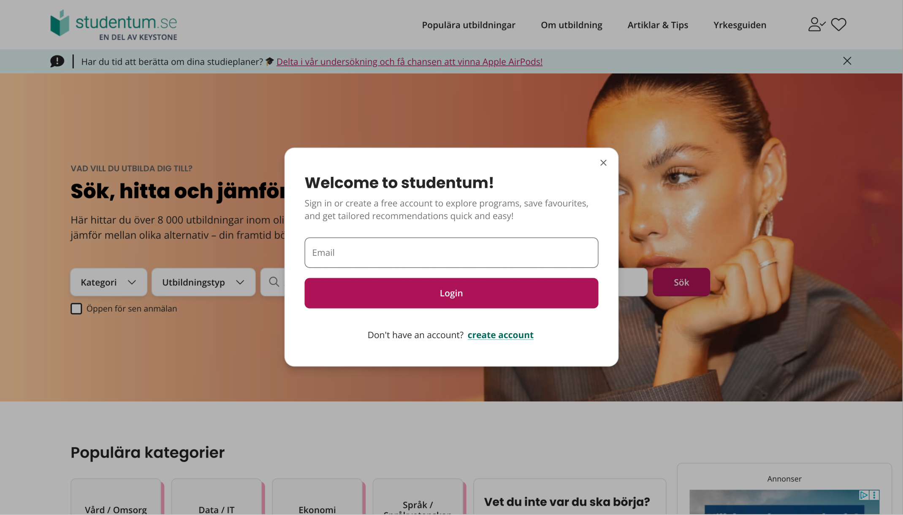
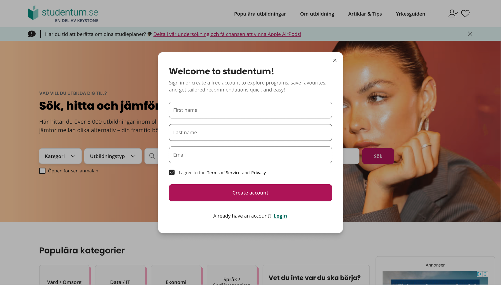
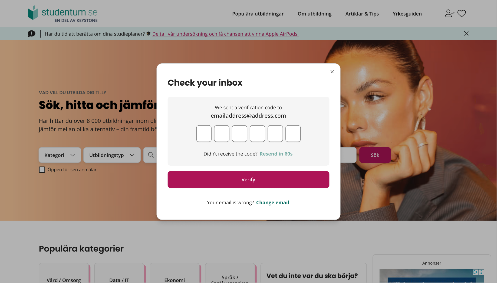
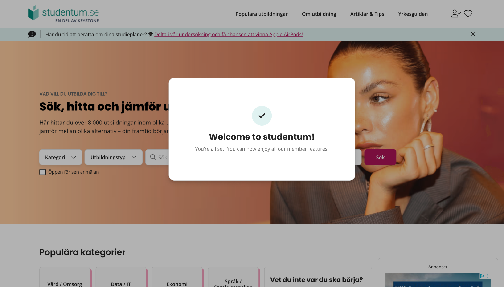
On mobile, the login pattern needed to work as a bottom sheet so users could authenticate without losing their place.
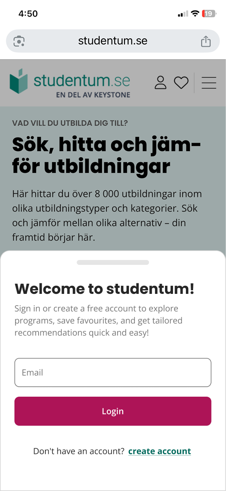
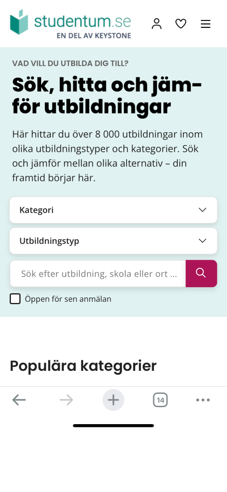
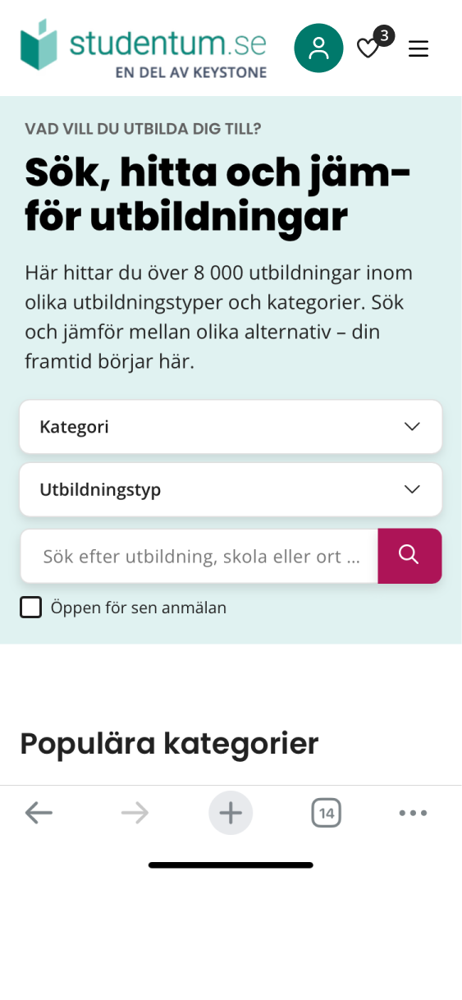
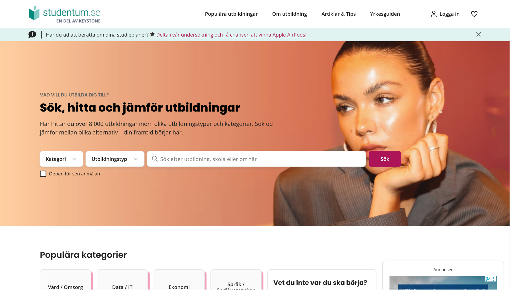
The navigation adapted to the user state — logged-out users saw entry points to create or sign in, while logged-in users saw account actions.
This project taught me that authentication is rarely just a form. In a product with many entry points, the real UX challenge is remembering the user's intent, reducing repeated decisions, and making every edge case feel like part of the same system.
The most valuable work happened before the modals: mapping every place a user could hit a login wall — across Studentum, Gymnasium, and Utbildning — and building one pattern that resolved all of them.
Map the entry points first
The modal is the last thing to design, not the first. Entry point mapping defines the constraints and reveals the real scope.
One mechanism reduces cognitive load
Users don't need different login behaviours depending on where they are. Consistency builds trust across the whole product.
Edge cases are the UX
Resend, wrong email, returning-user recognition, and redirect logic — these are where the real design work lives.